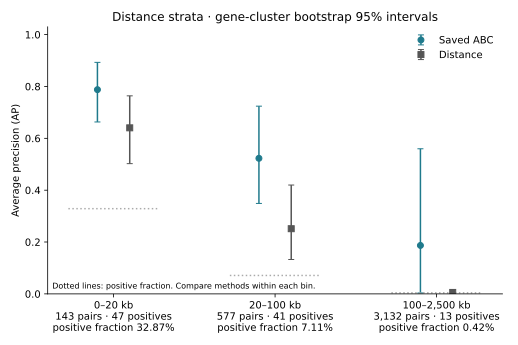
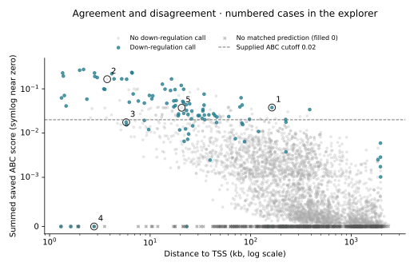

Exploratory Analyses Inspired by the Engreitz Lab
Which gene does a regulatory element control? The Engreitz Lab connects computational predictions with perturbation experiments to answer this question. A useful first check is whether a prediction adds information beyond a simpler explanation: the element is close to the gene.
I built a small, reproducible comparison of saved Activity-by-Contact (ABC) predictions and genomic distance on the lab’s public K562 example. It follows the original benchmark, then makes distance ranges, missing predictions, and individual experimental disagreements inspectable. This is a reanalysis of existing evidence, not independent validation.
How it works
Each observation is an experimentally tested regulatory element–gene pair. The two methods rank the same pairs: saved ABC power-law score, or proximity to the gene’s transcription start site. Precision asks how many top-ranked pairs show the source’s downregulatory response; recall asks how many of those responses the ranking recovers.
Average precision (AP) summarizes that ranking. The main analysis retains unmatched predictions at zero, as the official example does; the matched-only view checks how much that convention matters. No untested pair becomes a negative, and “not called downregulatory” is not proof of no regulatory effect.
Analysis 1 — Does ABC add information beyond distance?
Loading the reproducible analysis…
What this lets the lab do: check whether an apparent ranking advantage persists at comparable distances and after excluding unscored pairs.
Where I hope to contribute: careful data alignment, reproducible comparisons, and traceable explanations of model–experiment disagreements. Implementation was AI-assisted; the analysis decisions and checks are documented for review.
Distance-stratified comparison and downloadable figures

Overall precision–recall figure · Distance figure · Pair-level figure


Analysis 2 — Where do the predictions and experiments disagree?
A useful disagreement needs context. Examine the original effect, adjusted p-value, reported power, and prediction coverage before deciding what to investigate next. The supplied ABC threshold of 0.02 is shown as a reference, not tuned on these experiments.
Select a tested pair
See all pairs in score–distance space

Why this matters for the lab
The useful output is a small audit trail: the same tested pairs, explicit missingness, distance-aware comparisons, and disagreements that can be traced back to their experimental evidence. This is an inferred opportunity for analysis, not a claim about the lab’s current internal bottleneck.
A follow-up question: on a separate, pre-specified perturbation dataset, does ABC still add information within distance-matched groups after accounting for assay power? Freeze the cohort and scoring rules before inspecting outcomes. A persistent advantage would support transfer; a reduced advantage would motivate checking coverage, gene composition, and experimental sensitivity.
What I would bring
My single-cell analysis and Boolean-network modelling project in pancreatic cancer made me interested in turning expression patterns into testable biological questions. I would like to contribute careful data alignment, reproducible analysis, and clear communication between computational predictions and experiments—and develop these skills further in the lab.
Methods note
Processed public data from the Engreitz Lab resources and CRISPR_comparison, pinned to commit 50587422e6b. This is the repository’s saved K562 example, not the full CRISPR benchmark. It uses ABC power-law scores, not a newly trained model, measured Hi-C contacts, or the newer rE2G/scE2G methods.
Matching, labels, missingness, and the official reproduction
Matching follows the original workflow: genome-annotation gene symbols, mapped K562 cell identity, chromosome, and interval overlap. Genomic coordinates are GRCh38. Historical coordinates embedded in experimental names are identifiers only; the numeric coordinate columns are used for matching. Prediction elements overlapping the supplied TSS windows are filtered before matching. Multiple matching scores are summed.
The source’s Regulated label is retained. A significant increase in expression is not a downregulatory positive. The nonpositive group also contains less informative experiments: power and effect direction should be inspected, not erased by the binary label.
The original R workflow’s precision–recall calculation is reported separately from average precision.
AP and trapezoidal area are different summaries and should not be interchanged. Distance bins include their lower bound and exclude their upper bound: [0, 20), [20, 100), and [100, 2,500) kb. This reused benchmark is not held-out biological validation. Gene-cluster bootstrap intervals describe uncertainty within this small, selected dataset; they do not establish generalization to other cell types or assays. Every transformation and exclusion is available in the repository outputs.
README · Results and limitations · Plain-language walkthrough · Runnable analysis